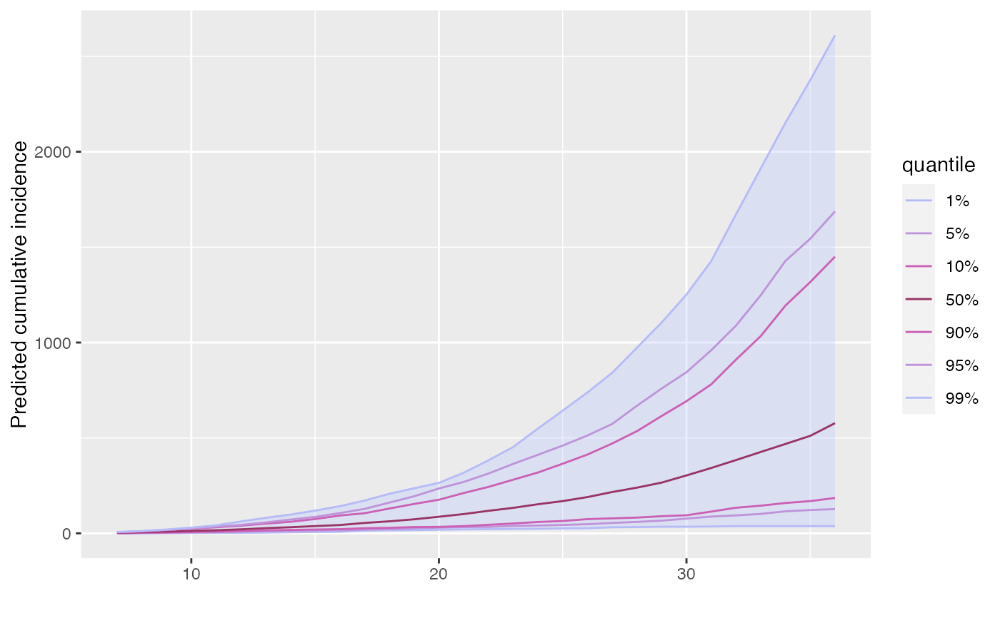

cumulate is an S3 generic to compute cumulative numbers defined in the
package incidence. The method for projections objects turns
predicted incidences into cumulative incidences over time.
# S3 method for projections
cumulate(x)A projections object.
The project function to generate the
projections objects.
if (require(distcrete) &&
require(incidence)) {
## simulate basic epicurve
dat <- c(0, 2, 2, 3, 3, 5, 5, 5, 6, 6, 6, 6)
i <- incidence(dat)
## example with a function for SI
si <- distcrete("gamma", interval = 1L,
shape = 1.5,
scale = 2, w = 0)
set.seed(1)
pred_1 <- project(i, runif(100, 0.8, 1.9), si, n_days = 30)
plot_1 <- plot(pred_1)
## cumulative predictions
pred_1_cum <- cumulate(pred_1)
pred_1_cum
plot(pred_1_cum)
}
#> Loading required package: distcrete
#> Loading required package: incidence
